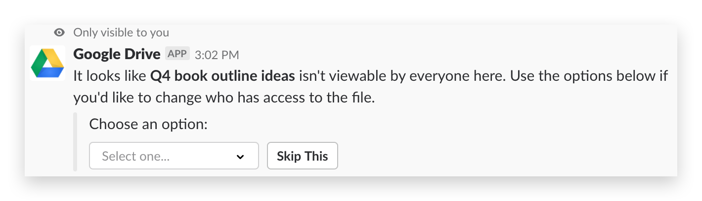
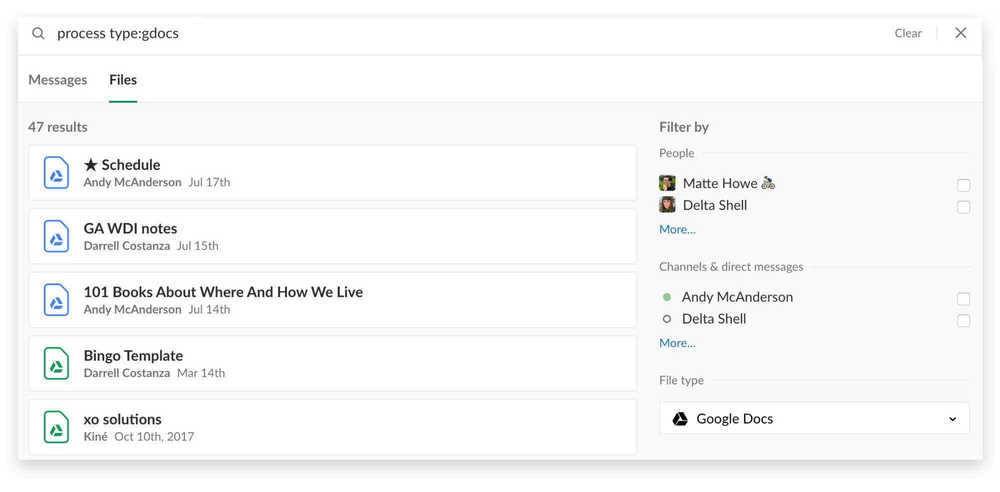
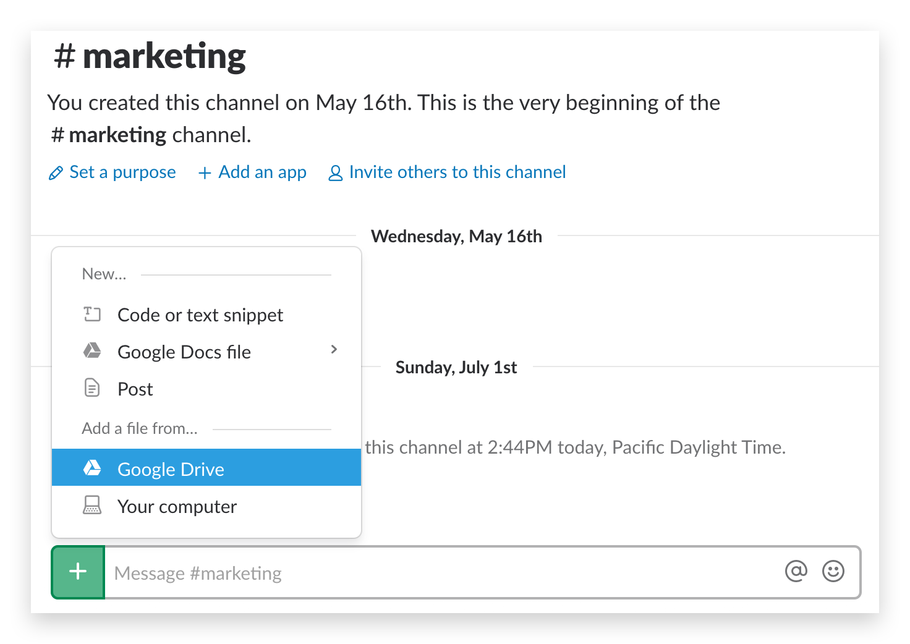

Several People Are Typing
6 ways to use Google Drive Bot’s newest features
Plus a refresher on everything Google Drive Bot can do in Slack

Teams love collaborative tools like Google Docs, Sheets and Slides for the ability to read and review without having to pass versions back and forth. But getting answers to your teammates is always a high priority. If you use Slack with Google Drive, you’re in luck: you can now reply directly to comments on all your Drive files without leaving Slack.

Get comments and respond directly
Last year, Drive kicked off its app for Slack with better previews. Soon after, automatic notifications appeared in Slack any time someone left a comment on your Google Drive files. It was a handy way to maintain visibility across all your work.
Today, Drive’s Slack app sends the text of any new comments on your files, adding the ability to reply directly to them via threads in Slack. It’s perfect for comments when someone asks a question you know the exact answer to, without the need to open up the document.
This latest addition comes on the heels of features already built into the Drive integration for Slack. Let’s walk through all the ways Drive and Slack together can save you time and effort at work.
Give instant access
When you’re sharing drafts of slides or spreadsheets with a group, it can be hard to remember if everyone reading your Slack channel has access to your document. The Drive Slack app has you covered. The moment you share a Drive file in Slack, it quickly checks privileges for every member in that channel. You’ll get an instant notification if there’s a problem, along with a drop-down menu to let you change permissions with one simple click, so everyone can read and respond.

Get notified when someone shares files with you
Another useful feature of the Drive app is the instant notification when someone shares a file directly with you. It’s the perfect follow-up to a meeting where someone promised they’d send you their deck. Now you’ll know the moment they do.
Search to find what you need
Every time you share a Google Drive file in Slack, Slack indexes not only the title but also text content within those files. So when you search for something in the future, Slack will locate results based on both titles and content. Plus, our revamped search makes it even easier to limit results when you click over to the Files tab and choose the Google Drive file type.

File upload makes sharing easy
When you upload a file to Slack, there’s a handy shortcut to share a Drive file. Once selected, you’ll get a popup of all the recent Drive files you’ve interacted with to choose from, making sharing that much easier.

See Slack activity in Google Drive too
Drive keeps track of when something is shared in Slack, and will show you on your activity tab, found when clicking the “info” button in the upper right. You’ll see a running list of recent actions, including when documents were shared and into which channels in your Slack workspace.

Drive and Slack go together like bread and jam, and thanks to recent updates, working between the two is easier than ever. If you haven’t yet connected Drive to your Slack workspace, get started here today.
Keep Reading
Book travel, share plans, and look up flights, all in Slack
A quick rundown of some recent improvements to Slack
Announcing an exciting new partnership and welcoming Hipchat and Stride users to Slack. We’re glad you’re here!
Stay updated with Slack by signing up for our newsletter
Slack is the collaboration hub, where the right people are always in the loop and key information is always at their fingertips. Teamwork in Slack happens in channels — searchable conversations that keep work organized and teams better connected.